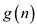
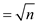
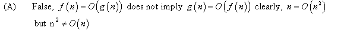

Consider the following polynomial:
Here, be a degree
in
and let  be a
constant.
be a
constant.
The polynomial can be rewritten as shown below:
Consider.
As , so there
must be an integer  such that
for all
such that
for all  .
.
So
Let
a.
If , then

For a given function m, denote as the set of functions given by
From the given statement , where
is
a constant.
From equations (1) and (2),
Hence from the definition, .
b.
If , then
For a given function , denote as the set of functions given by

From the given statement , where
is
a constant.
From equations (1) and (3),

Hence from the definition, .
c.
If , then
For a given function , denote As the set of functions given by
From the given statement , where
is
a constant.
From equation (1),
Hence from the definition, .
If , then
For a given function , denote as the set of functions given by
From the given statement , where
is
a constant.
From equations (1) and (4),
Hence from the definition, .
e.
If , then
For a given function , denote as the set of functions given by
From the given statement , where
is
a constant.
From equations (1) and (5),
Hence from the definition, .
Relative asymptotic growths:
L' Hospital's Rule: In the case where f(n) and g(n) are differentiable functions and
, the limit of can be computed as the limit of their derivatives.
Justifications:
(a)
Apply L' Hospital's Rule k times,
Hence,.
(b)
By applications of L' Hospital’s rule,
Hence, .
(c)
sin n is a periodic function and takes the values in the range [-1, 1].
When sin n=1,
When sin n = -1,.
(d)
Hence, .
(e)
Consider
Take log on both sides.
(d)
Consider .
and thus
And thus,
Finally
The limit lies in the interval [1/2, 1].
a.
Consider the following provided 30 functions:
, ,, ,,,,, , , , ,  , , , , , , , , , , , , , , , , ,
, , , , , , , , , , , , , , , , ,
Consider the following expression to arrange the function:
• The growth of exponential function is larger than any polynomial function. This means that the functions and are the 2 greatest function.
• It is already known.
This implies
or,
Now, apply poweron both sides, therefore
• Consider function
 (By using the binary logarithm).
• The iterated logarithmic functions are very slowly growing function.
The value of is the minimum number of logarithmic iteration at is less than 1.
Consider the following function:
Consider the following function:
Where,
• Consider the following function:
Using equation (3.19)
• Consider the following function:
Using equation (3.18)
Therefore, the following is the different equivalence class of
each term. Here, the symbol > denotes  notation.
notation.
b.
Consider the following non-negative function for all function of part (a).
For any value of n, the best and worst time complexity of cannot be and .

a.
Asymptotic notation is used to describe the running time of algorithm in term of function.
big(O) notation: upper bound in above graph represents the big(O) notation.
…… (1)
 notation: lower bound in above graph represents the
notation.
notation: lower bound in above graph represents the
notation.
…… (2)
In both equation (1) and (2), and
 are the positive constant
are the positive constant
is asymptotically non-negative for all the positive constants c,
Such that
Since, from equation (2), the constant c is positive
So,
…… (3)
Similarly, from equation (1),
…… (4)
Hence, from equation (3) and (4),
b.
First discussion is on the omega and the omega infinity notation and then on the basis of this second discussion will be on its advantage or disadvantage,
Omega notation: It is denoted by symbol. It is an
asymptotic lower bound notation. It is defined as,
Whereas,

Advantage:
• It has a wider range of values for the notations so a large range of the complexity
• can be analyzed.
• In notation
the resource utilization is maximum.
• In notation
running time of algorithm will be minimum.
Disadvantage:
As the range is not fixed so it is not possible to determine its limitation and its consequences to an indefinite analysis.
c.
Consider the theorem 3.1,
When is
substituted in place of  but in the
theorem 3.1 is used,
then the” if and only if” direction will have modification as:
but in the
theorem 3.1 is used,
then the” if and only if” direction will have modification as:
Because from the author definition,
If and only if
d.
Consider the following formula of the soft theta and soft omega:
(Soft omega):
(Soft theta):
For any two function f(n) and g(n), the function if and only if and .
• These notation are similar to older one only difference is that here the logarithms factor extra added to them.
• This logarithm function used in the case of larger inputs.
• From the definition soft-oh is lower bound in nature and soft-omega is upper bound in nature and soft theta lies in between them.
So, it is obvious that if any function is equal to soft-theta then that function is also equal to soft omega.
Consider the following iterated function:
In above equation is an iterated function of f which is iterated ith times to reduce it to c or less than c.
a.
Consider the following function:
It is required to reduce that function to 0 that is the values of c is 0.
Suppose theis iterated 1 more time therefore the becomes:
Similarly, when is iterated n time therefore, thebecome:
Therefore, it is required to iterate n times function f to reduce it to 0.
Hence, the iterated must be .
Consider the following function:
It is required to reduce that function to 1 that is the values of c is 1.
In logarithmic term when base is equal to its argument then only its answer gets 1.
Therefore, it is required to iterate times function f to reduce it to 1.
Hence, the iterated must
be  .
.
Consider the following function:
It is required to reduce that function to 1 that is the values of c is 1.
Suppose theis iterated 1 more time therefore the becomes:
Now, is again iterated, therefore the becomes:
After every iteration the function f gets halves itself.
Similarly, when is iterated
 time
therefore, thebecome:
time
therefore, thebecome:
Therefore, it is required to iterate times
function f to reduce it to 1.
Hence, the iterated must be .
Consider the following function:
It is required to reduce that function to 2 that is the values of c is 2.
Suppose theis iterated 1 more time therefore the becomes:
Now, is again iterated, therefore the becomes:
After every iteration the function f gets halves itself.
Similarly, when is iterated
time
therefore, thebecome:
In
times the function f is reduces it 1. When
function f is iterated one less than
times then the value of function f at
will
double the value at
times that is 2.
Hence, the iterated must be , ignoring the constant.
Consider the following function:
It is required to reduce that function to 2 that is the values of c is 2.
Suppose theis iterated 1 more time therefore the becomes:
Now, is again iterated, therefore the becomes:
After every iteration the function f power gets halves itself. Therefore after p iteration the become:
After p iteration, .
Therefore, the value of p becomes
 .
.
Hence, the iterated must be to reduce function f to 2.
Consider the following function:
It is required to reduce that function to 1 that is the values of c is 1.
Suppose theis iterated 1 more time therefore the becomes:
Now, is again iterated, therefore the becomes:
After every iteration the function f power gets halves itself. Therefore after p iteration the become:
After p iteration, .
Hence, it is not possible to reduce function f into 1.
Consider the following function:

It is required to reduce that function to 2 that is the values of c is 2.
Suppose theis iterated 1 more time therefore the becomes:
Now, is again iterated, therefore the becomes:
Therefore after p iteration thebecome:
After p iteration, . Therefore, the value of p becomes .
Hence, the iterated must be to reduce function f to 2.
Consider the following function:
 notation is
used to determine lower bound it is because it is not
symptomatically tight. Definition is as follows:
notation is
used to determine lower bound it is because it is not
symptomatically tight. Definition is as follows:
Now, define as a set.
Hence, the iterated will be to reduce function f to 2.